Chapter 1 Understanding the data from a product perspective
1.1 Understanding the products from a chemical and physical point of view
In the following code, we first import the data with the read.delim2 function, then we print the first rows with the head function ; finally we make a summary of the dataset with the summary function. All these steps are really important when you begin you analysis.
salmon_car <- read.delim2("Salmon_characteristics.txt",
header=TRUE, row.names=1, comment.char="#",dec=",")
head(salmon_car)## water lipid TVBN TMA salt phenol pH
## prod1_Fr -0.8644 1.1375 -0.7629 -0.8717 -0.1471 -0.3776 1.5412
## prod2_Fr -1.1476 0.7036 0.2357 0.3204 0.1626 0.0112 1.2098
## prod3_Fr -0.4172 0.3378 0.4354 1.2144 0.3174 0.4001 0.3812
## prod4_Scot -0.8147 -0.0961 -0.5632 -0.8717 0.3174 -0.4554 0.2154
## prod5_Ger -1.6991 0.0366 -0.7629 -0.8717 2.1752 -0.3776 -0.2817
## prod6_Ire -0.9886 0.9653 -0.7629 -0.8717 0.0077 0.6594 1.0441
## total.viable.count lactic.flora lactobacilli brochothrix yeast
## prod1_Fr 0.1112 0.6665 1.1382 0.5461 0.7729
## prod2_Fr 0.4302 -0.4514 0.1290 -0.7559 1.2034
## prod3_Fr 0.8225 0.8725 0.4088 0.6465 0.2875
## prod4_Scot -0.2432 -1.5861 -1.0624 -0.7559 -1.0340
## prod5_Ger -1.5584 -1.5861 -1.0624 -0.7559 -1.0340
## prod6_Ire -2.5977 -1.5861 -1.0624 -0.7559 -1.0340
## enterobacteriaceae L a b origin
## prod1_Fr 0.8314 0.9917 -0.6467 -0.4567 France
## prod2_Fr 0.5998 0.8542 0.5297 0.9551 France
## prod3_Fr 0.2524 -0.8548 0.3927 0.2813 France
## prod4_Scot -1.5793 0.3020 1.7439 3.3236 Scotland
## prod5_Ger -0.9582 -1.3485 0.7341 0.5485 Germany
## prod6_Ire -1.5793 -0.4322 0.4016 0.4278 Ireland## water lipid TVBN TMA
## Min. :-1.69910 Min. :-2.4628000 Min. :-1.1623 Min. :-0.8717000
## 1st Qu.:-0.85198 1st Qu.:-0.4259750 1st Qu.:-0.7629 1st Qu.:-0.8717000
## Median :-0.07435 Median : 0.2159000 Median :-0.3635 Median :-0.2757000
## Mean :-0.00001 Mean : 0.0000067 Mean : 0.0000 Mean : 0.0000033
## 3rd Qu.: 0.47713 3rd Qu.: 0.5763000 3rd Qu.: 0.4354 3rd Qu.: 0.5439000
## Max. : 2.02730 Max. : 1.6251000 Max. : 2.6322 Max. : 2.4065000
## salt phenol pH total.viable.count
## Min. :-2.0049 Min. :-1.20730 Min. :-1.7733000 Min. :-2.5977000
## 1st Qu.:-0.6115 1st Qu.:-0.65633 1st Qu.:-0.8617500 1st Qu.:-0.3530250
## Median : 0.0077 Median :-0.29985 Median :-0.0331500 Median : 0.2699000
## Mean : 0.0000 Mean : 0.00001 Mean :-0.0000067 Mean : 0.0000067
## 3rd Qu.: 0.3174 3rd Qu.: 0.40010 3rd Qu.: 0.8368750 3rd Qu.: 0.8187750
## Max. : 2.4848 Max. : 3.45930 Max. : 2.0384000 Max. : 1.1384000
## lactic.flora lactobacilli brochothrix
## Min. :-1.5861000 Min. :-1.0624000 Min. :-0.7559
## 1st Qu.:-0.4710500 1st Qu.:-1.0624000 1st Qu.:-0.7559
## Median : 0.3886500 Median : 0.2064500 Median :-0.7559
## Mean : 0.0000033 Mean :-0.0000067 Mean : 0.0000
## 3rd Qu.: 0.8312750 3rd Qu.: 0.9333500 3rd Qu.: 0.8192
## Max. : 1.5327000 Max. : 1.9639000 Max. : 2.4632
## yeast enterobacteriaceae L a
## Min. :-1.0340000 Min. :-1.57930 Min. :-1.8353 Min. :-3.9939
## 1st Qu.:-1.0340000 1st Qu.:-0.65815 1st Qu.:-0.8034 1st Qu.:-0.4152
## Median : 0.2608000 Median : 0.04190 Median : 0.1441 Median : 0.2868
## Mean : 0.0000033 Mean :-0.00001 Mean : 0.0000 Mean : 0.0000
## 3rd Qu.: 0.7537750 3rd Qu.: 0.79060 3rd Qu.: 0.5455 3rd Qu.: 0.5362
## Max. : 2.1072000 Max. : 1.64720 Max. : 2.5982 Max. : 1.7439
## b origin
## Min. :-1.827700 Length:30
## 1st Qu.:-0.577750 Class :character
## Median : 0.073650 Mode :character
## Mean :-0.000003
## 3rd Qu.: 0.388475
## Max. : 3.323600As you can see in the output, something is missing in the description of the variable origin. By default, the numbers of levels to be displayed is equal to 7. Let’s set the argument maxsum to 8 and see what happens.
## water lipid TVBN TMA
## Min. :-1.69910 Min. :-2.4628000 Min. :-1.1623 Min. :-0.8717000
## 1st Qu.:-0.85198 1st Qu.:-0.4259750 1st Qu.:-0.7629 1st Qu.:-0.8717000
## Median :-0.07435 Median : 0.2159000 Median :-0.3635 Median :-0.2757000
## Mean :-0.00001 Mean : 0.0000067 Mean : 0.0000 Mean : 0.0000033
## 3rd Qu.: 0.47713 3rd Qu.: 0.5763000 3rd Qu.: 0.4354 3rd Qu.: 0.5439000
## Max. : 2.02730 Max. : 1.6251000 Max. : 2.6322 Max. : 2.4065000
## salt phenol pH total.viable.count
## Min. :-2.0049 Min. :-1.20730 Min. :-1.7733000 Min. :-2.5977000
## 1st Qu.:-0.6115 1st Qu.:-0.65633 1st Qu.:-0.8617500 1st Qu.:-0.3530250
## Median : 0.0077 Median :-0.29985 Median :-0.0331500 Median : 0.2699000
## Mean : 0.0000 Mean : 0.00001 Mean :-0.0000067 Mean : 0.0000067
## 3rd Qu.: 0.3174 3rd Qu.: 0.40010 3rd Qu.: 0.8368750 3rd Qu.: 0.8187750
## Max. : 2.4848 Max. : 3.45930 Max. : 2.0384000 Max. : 1.1384000
## lactic.flora lactobacilli brochothrix
## Min. :-1.5861000 Min. :-1.0624000 Min. :-0.7559
## 1st Qu.:-0.4710500 1st Qu.:-1.0624000 1st Qu.:-0.7559
## Median : 0.3886500 Median : 0.2064500 Median :-0.7559
## Mean : 0.0000033 Mean :-0.0000067 Mean : 0.0000
## 3rd Qu.: 0.8312750 3rd Qu.: 0.9333500 3rd Qu.: 0.8192
## Max. : 1.5327000 Max. : 1.9639000 Max. : 2.4632
## yeast enterobacteriaceae L a
## Min. :-1.0340000 Min. :-1.57930 Min. :-1.8353 Min. :-3.9939
## 1st Qu.:-1.0340000 1st Qu.:-0.65815 1st Qu.:-0.8034 1st Qu.:-0.4152
## Median : 0.2608000 Median : 0.04190 Median : 0.1441 Median : 0.2868
## Mean : 0.0000033 Mean :-0.00001 Mean : 0.0000 Mean : 0.0000
## 3rd Qu.: 0.7537750 3rd Qu.: 0.79060 3rd Qu.: 0.5455 3rd Qu.: 0.5362
## Max. : 2.1072000 Max. : 1.64720 Max. : 2.5982 Max. : 1.7439
## b origin
## Min. :-1.827700 Length:30
## 1st Qu.:-0.577750 Class :character
## Median : 0.073650 Mode :character
## Mean :-0.000003
## 3rd Qu.: 0.388475
## Max. : 3.323600Now we want to get a multivariate description of the smoked salmons based on their chemical and physical measurements. As all the measures (except origin) are continuous, we’re going to run a PCA on the dataset. It seems fair to consider all the variables as active, and to scale them to unit variance. Here, the last variable origin is considered as illustrative.
To do so, we are using the FactoMineR package and the PCA function. First, load the FactoMineR package and run the PCA function.
## [1] "eig" "var" "ind" "svd" "quali.sup" "call"When you run a PCA, you often want to save the results in an R object, in order to use them latter. This is what we did: we saved them in an object we named res, then we applied the names function to that object. This function allows you to obtain the names of the different components of the input. For instance, if you want to see of the variance is decomposed:
## eigenvalue percentage of variance cumulative percentage of variance
## comp 1 5.46821199 34.17632493 34.17632
## comp 2 2.51222592 15.70141202 49.87774
## comp 3 1.80173714 11.26085714 61.13859
## comp 4 1.33622262 8.35139136 69.48999
## comp 5 1.24367295 7.77295594 77.26294
## comp 6 0.98474448 6.15465300 83.41759
## comp 7 0.87880761 5.49254757 88.91014
## comp 8 0.55820900 3.48880625 92.39895
## comp 9 0.35637332 2.22733324 94.62628
## comp 10 0.29787183 1.86169893 96.48798
## comp 11 0.18417610 1.15110061 97.63908
## comp 12 0.15473811 0.96711318 98.60619
## comp 13 0.09236742 0.57729636 99.18349
## comp 14 0.07795966 0.48724787 99.67074
## comp 15 0.03834453 0.23965332 99.91039
## comp 16 0.01433732 0.08960828 100.00000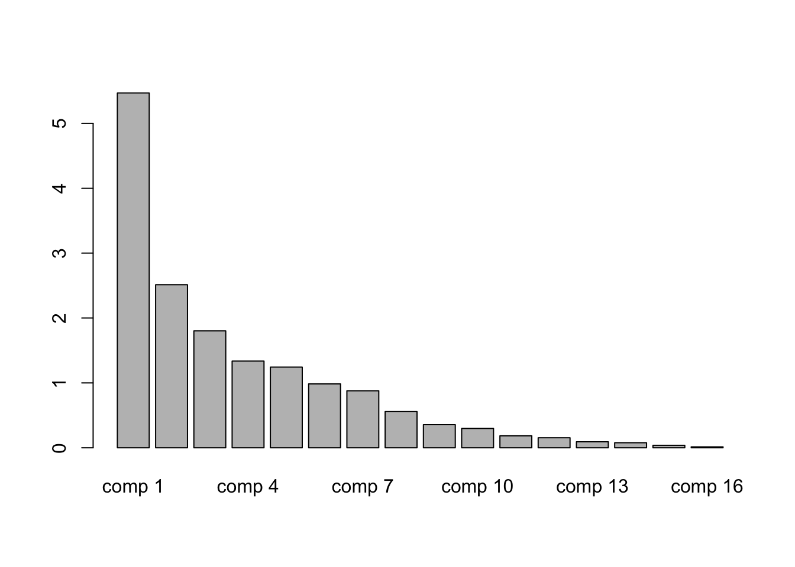
Now, let’s see what happens if we run the plot.PCA function to the res object.
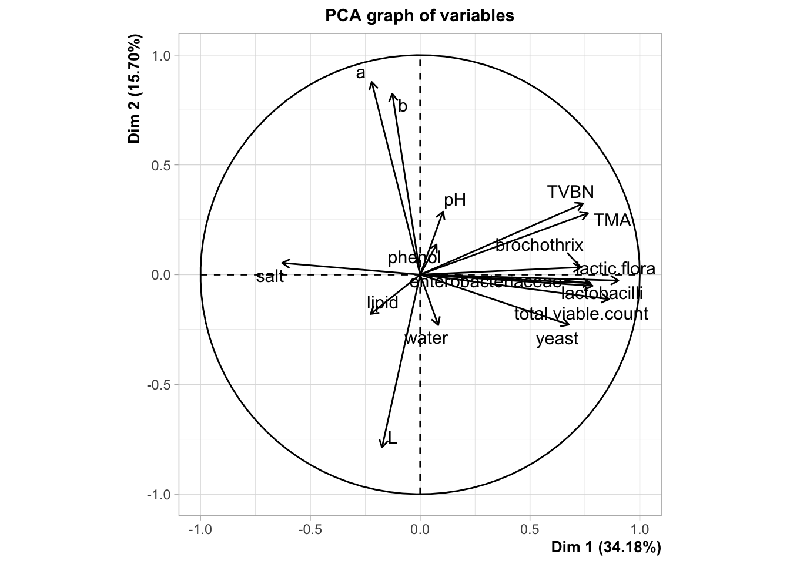
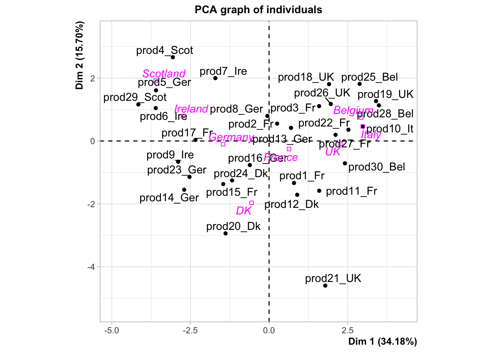
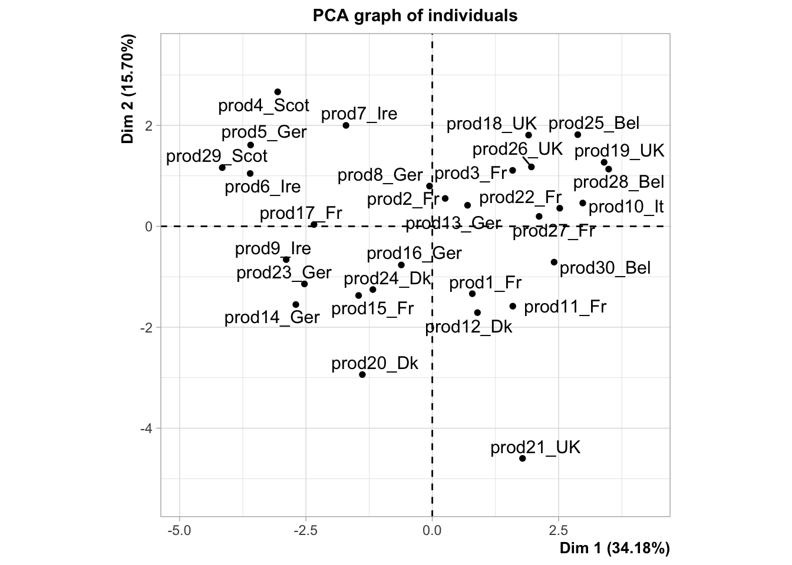
As you can see, some news feature have been added to the FactoMineR package, notably the ggplot type representation of the individuals and the variables. In this example, we can see how important supplementary variables can be. We can also see how they can be represented, which is the case by default. Here, we projected the information on the origin of the smoked salmon. Look at the product 10, how do you think this product is salty?
Any questions about the concept of illustrative variables? What do you think about the percentage associated with each axis?
Now that we know how to differentiate illustrative or supplementary variables from the active ones, let’s spend some time to interpret this PCA. As you know, the two graphical representations have to be interpreted jointly.
You may want to use the dimdesc function to get an interpretation of the axis.
## [1] "Dim.1" "Dim.2" "Dim.3" "call"## $quanti
## correlation p.value
## lactic.flora 0.9027708 9.041485e-12
## total.viable.count 0.8608419 1.046362e-09
## lactobacilli 0.7850662 2.795050e-07
## enterobacteriaceae 0.7762724 4.619296e-07
## TMA 0.7642286 8.873792e-07
## TVBN 0.7421954 2.668420e-06
## brochothrix 0.7317464 4.332436e-06
## yeast 0.6773779 3.930677e-05
## salt -0.6282864 2.011201e-04
##
## $quali
## R2 p.value
## origin 0.7348005 3.964817e-05
##
## $category
## Estimate p.value
## origin=Belgium 2.871677 0.02182312
## origin=UK 2.208683 0.03851838
## origin=Ireland -2.788912 0.03325308
## origin=Scotland -3.662799 0.02354381
##
## attr(,"class")
## [1] "condes" "list "Now, you can try to explore the dataset in a more dynamical manner. What is the difference between this,
and this?
Exercise. You can play with the different arguments of the PCA and the plot.PCA functions.
Remark. PCA, by extracting dimensions, can be seen as a method to summarize the data, or more precisely the relations amongst the variables of your dataset. Some people would say that by running a PCA you cluster variables into dimensions. It’s very convenient, because you simplify your understanding by using a few dimensions instead of all the variables. You could do the same thing with the individuals. Instead of reducing the complexity on your variables, you will reduce the complexity on the individuals.
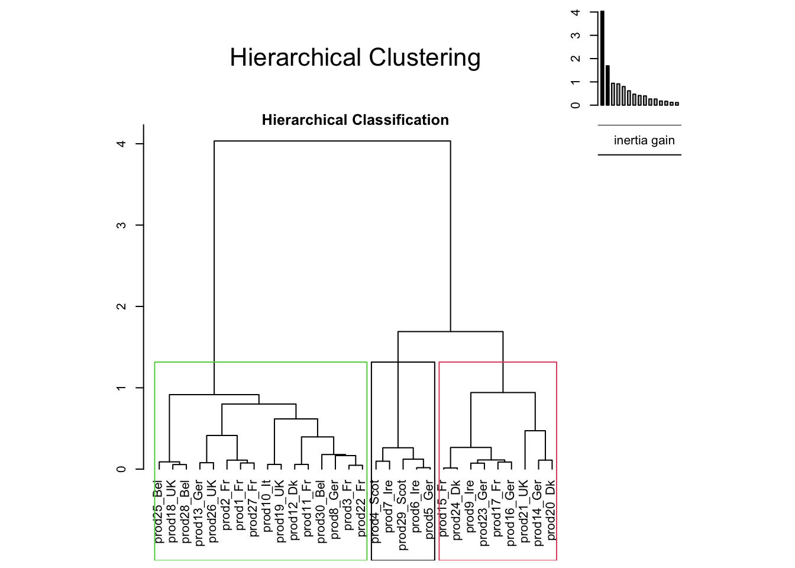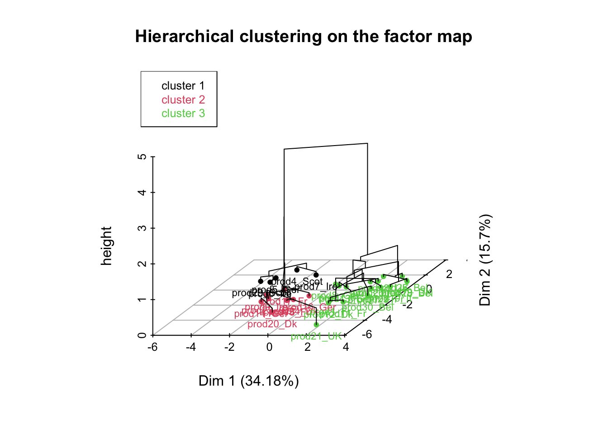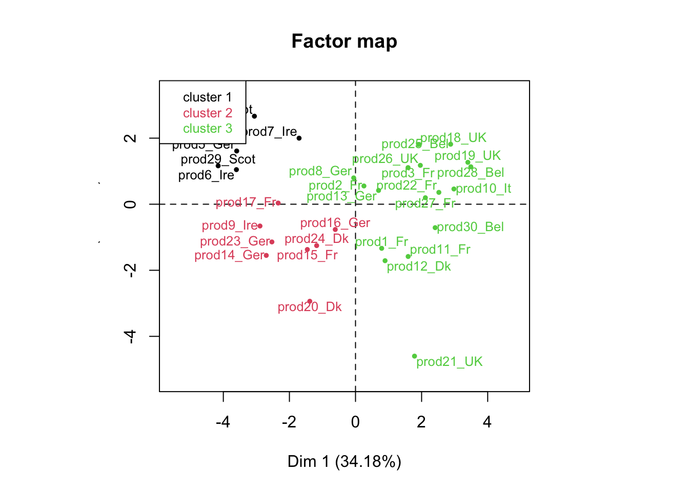
## [1] "data.clust" "desc.var" "desc.axes" "desc.ind" "call"## [1] "test.chi2" "category" "quanti.var" "quanti" "call"## [1] "1" "2" "3"## v.test Mean in category Overall mean sd in category
## b 2.967108 1.23202 -3.333333e-06 1.1663873
## salt 2.404836 0.99856 -1.457168e-17 1.0973584
## a 2.291474 0.95148 -3.700743e-18 0.4806493
## TMA -2.099319 -0.87170 3.333333e-06 0.0000000
## yeast -2.490229 -1.03400 3.333333e-06 0.0000000
## water -2.519590 -1.04622 -1.000000e-05 0.5634578
## enterobacteriaceae -3.052957 -1.26770 -1.000000e-05 0.3944804
## lactic.flora -3.077490 -1.27786 3.333333e-06 0.6164800
## total.viable.count -3.819886 -1.58612 6.666667e-06 0.9248322
## Overall sd p.value
## b 0.9999991 0.0030061550
## salt 1.0000064 0.0161797401
## a 0.9999972 0.0219360319
## TMA 1.0000099 0.0357888054
## yeast 0.9999921 0.0127660659
## water 1.0000067 0.0117491490
## enterobacteriaceae 1.0000148 0.0022659864
## lactic.flora 1.0000041 0.0020875189
## total.viable.count 1.0000033 0.0001335133## v.test Mean in category Overall mean sd in category Overall sd
## L 2.442596 0.7521750 -1.619075e-18 0.5146511 0.9999999
## water 2.241235 0.6901625 -1.000000e-05 0.9409535 1.0000067
## lactic.flora -2.264032 -0.6971875 3.333333e-06 0.7459357 1.0000041
## TMA -2.291215 -0.7055625 3.333333e-06 0.2520950 1.0000099
## b -2.309972 -0.7113375 -3.333333e-06 0.4989181 0.9999991
## TVBN -2.396348 -0.7379375 -1.966020e-17 0.3225866 1.0000055
## brochothrix -2.454675 -0.7559000 -5.551115e-18 0.0000000 1.0000069
## lactobacilli -2.903449 -0.8941125 -6.666667e-06 0.4452469 1.0000168
## p.value
## L 0.014582067
## water 0.025010865
## lactic.flora 0.023572148
## TMA 0.021950968
## b 0.020889703
## TVBN 0.016559366
## brochothrix 0.014101201
## lactobacilli 0.003690765## v.test Mean in category Overall mean sd in category
## lactic.flora 4.334916 0.7039353 3.333333e-06 0.4319264
## total.viable.count 4.055101 0.6585000 6.666667e-06 0.3942778
## lactobacilli 3.996881 0.6490412 -6.666667e-06 0.7748847
## enterobacteriaceae 3.794019 0.6160941 -1.000000e-05 0.6448174
## TMA 3.623520 0.5884176 3.333333e-06 0.9648019
## yeast 3.602067 0.5849235 3.333333e-06 0.8154801
## brochothrix 3.559652 0.5780412 -5.551115e-18 0.9968236
## TVBN 3.303261 0.5364059 -1.966020e-17 1.0210896
## salt -3.148943 -0.5113471 -1.457168e-17 0.6917277
## Overall sd p.value
## lactic.flora 1.0000041 1.458157e-05
## total.viable.count 1.0000033 5.011257e-05
## lactobacilli 1.0000168 6.418262e-05
## enterobacteriaceae 1.0000148 1.482285e-04
## TMA 1.0000099 2.906203e-04
## yeast 0.9999921 3.156966e-04
## brochothrix 1.0000069 3.713463e-04
## TVBN 1.0000055 9.556725e-04
## salt 1.0000064 1.638622e-03Instead of having 30 smoked salmons, we now have 3 groups of salmons: that’s how we reduce the complexity of our problem.
Let’s use a very interesting output of our HCPC function, and play with it.
## water lipid TVBN TMA
## Min. :-1.69910 Min. :-2.4628000 Min. :-1.1623 Min. :-0.8717000
## 1st Qu.:-0.85198 1st Qu.:-0.4259750 1st Qu.:-0.7629 1st Qu.:-0.8717000
## Median :-0.07435 Median : 0.2159000 Median :-0.3635 Median :-0.2757000
## Mean :-0.00001 Mean : 0.0000067 Mean : 0.0000 Mean : 0.0000033
## 3rd Qu.: 0.47713 3rd Qu.: 0.5763000 3rd Qu.: 0.4354 3rd Qu.: 0.5439000
## Max. : 2.02730 Max. : 1.6251000 Max. : 2.6322 Max. : 2.4065000
##
## salt phenol pH total.viable.count
## Min. :-2.0049 Min. :-1.20730 Min. :-1.7733000 Min. :-2.5977000
## 1st Qu.:-0.6115 1st Qu.:-0.65633 1st Qu.:-0.8617500 1st Qu.:-0.3530250
## Median : 0.0077 Median :-0.29985 Median :-0.0331500 Median : 0.2699000
## Mean : 0.0000 Mean : 0.00001 Mean :-0.0000067 Mean : 0.0000067
## 3rd Qu.: 0.3174 3rd Qu.: 0.40010 3rd Qu.: 0.8368750 3rd Qu.: 0.8187750
## Max. : 2.4848 Max. : 3.45930 Max. : 2.0384000 Max. : 1.1384000
##
## lactic.flora lactobacilli brochothrix
## Min. :-1.5861000 Min. :-1.0624000 Min. :-0.7559
## 1st Qu.:-0.4710500 1st Qu.:-1.0624000 1st Qu.:-0.7559
## Median : 0.3886500 Median : 0.2064500 Median :-0.7559
## Mean : 0.0000033 Mean :-0.0000067 Mean : 0.0000
## 3rd Qu.: 0.8312750 3rd Qu.: 0.9333500 3rd Qu.: 0.8192
## Max. : 1.5327000 Max. : 1.9639000 Max. : 2.4632
##
## yeast enterobacteriaceae L a
## Min. :-1.0340000 Min. :-1.57930 Min. :-1.8353 Min. :-3.9939
## 1st Qu.:-1.0340000 1st Qu.:-0.65815 1st Qu.:-0.8034 1st Qu.:-0.4152
## Median : 0.2608000 Median : 0.04190 Median : 0.1441 Median : 0.2868
## Mean : 0.0000033 Mean :-0.00001 Mean : 0.0000 Mean : 0.0000
## 3rd Qu.: 0.7537750 3rd Qu.: 0.79060 3rd Qu.: 0.5455 3rd Qu.: 0.5362
## Max. : 2.1072000 Max. : 1.64720 Max. : 2.5982 Max. : 1.7439
##
## b origin clust
## Min. :-1.827700 France :8 1: 5
## 1st Qu.:-0.577750 Germany:6 2: 8
## Median : 0.073650 UK :4 3:17
## Mean :-0.000003 Belgium:3
## 3rd Qu.: 0.388475 DK :3
## Max. : 3.323600 Ireland:3
## (Other):3res <- PCA(reshcpc$data.clust,quali.sup=c(17,18),graph=F)
plot.PCA(res,choix="var",graph.type = "classic")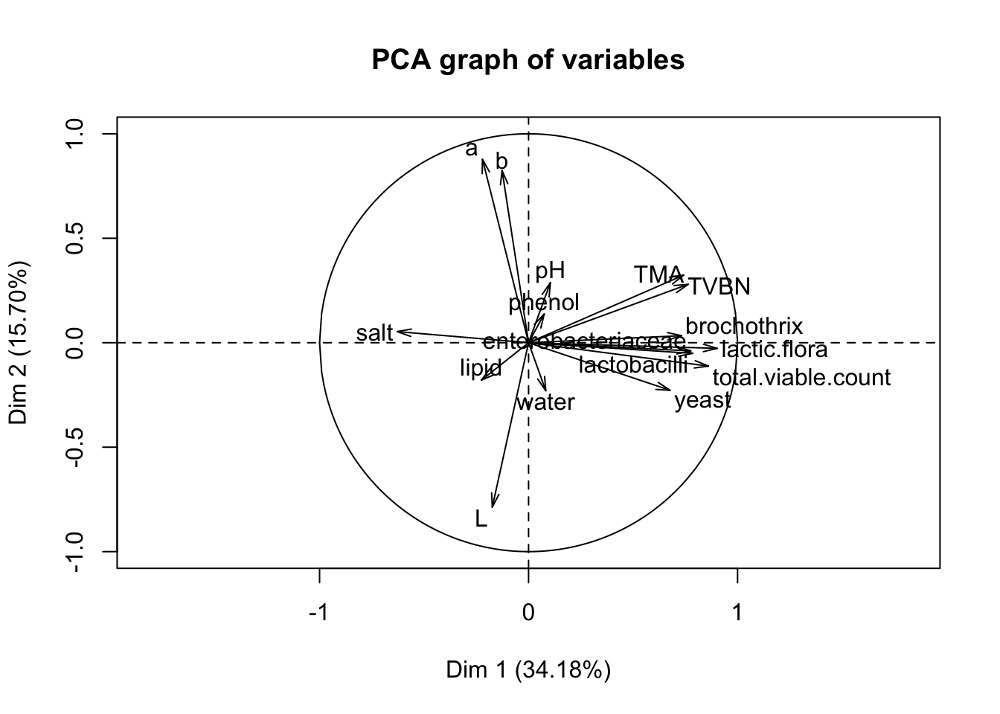
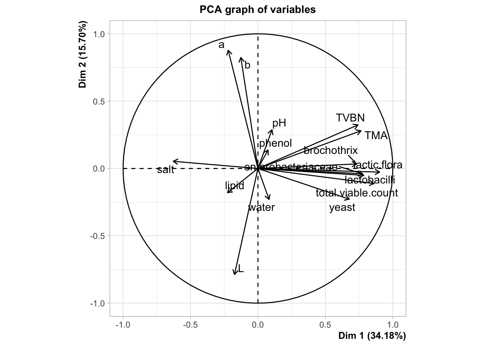
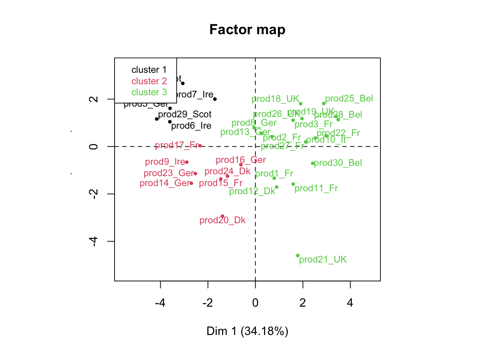
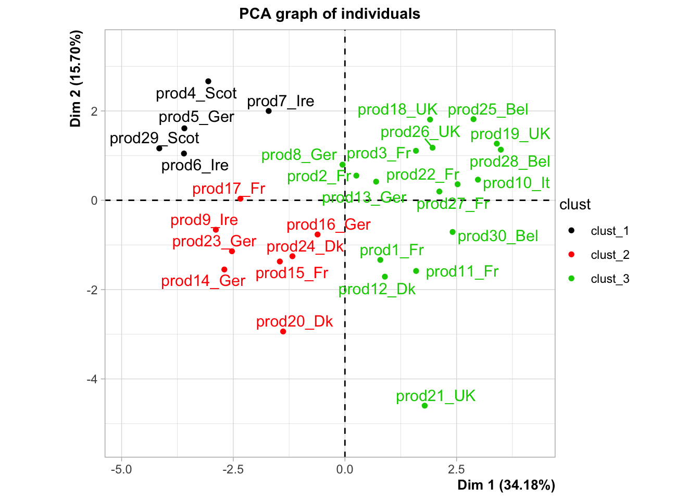
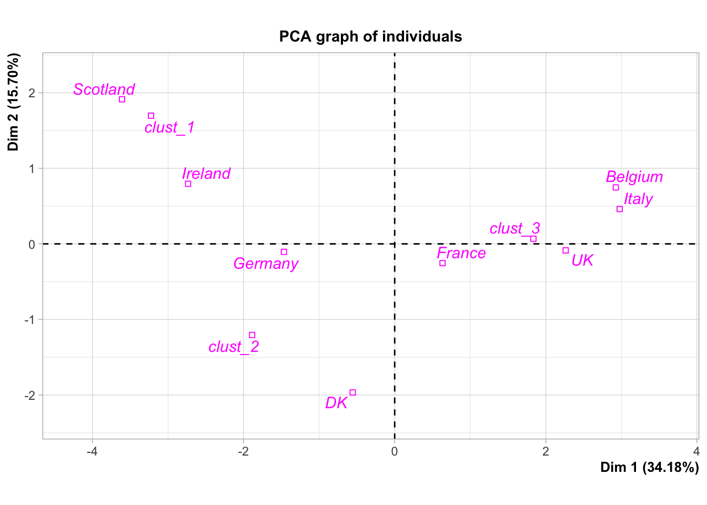
plot(res,habillage="salt",ggoptions=list(low.col.quanti="grey90",high.col.quanti="grey10"),
legend=list(x="bottom"),invisible = "quali")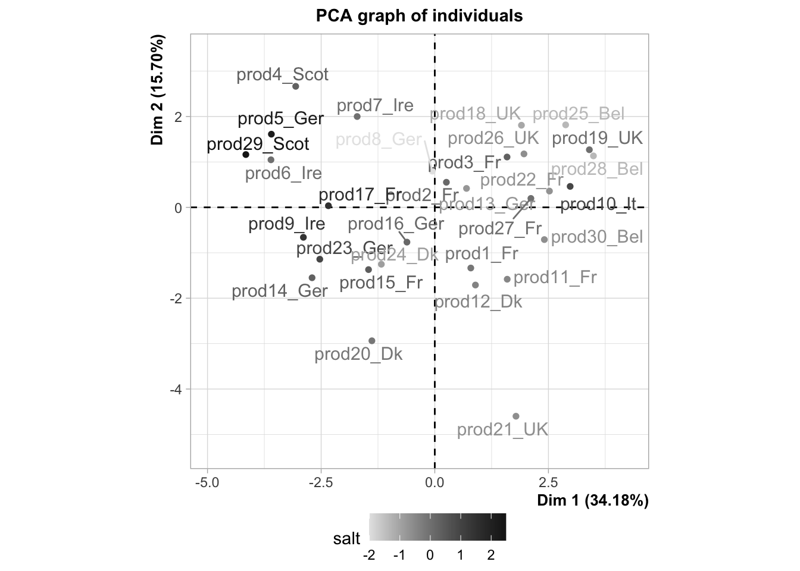
Exercise. This exercise is very important as it presents two very useful functions of the FactoMineR package.
descfreq(table(reshcpc$data.clust$clust,reshcpc$data.clust$origin))
catdes(reshcpc$data.clust,num.var=18)To understand the code, you should first run this:
Exercise. Please, provide a description of the French salmons.